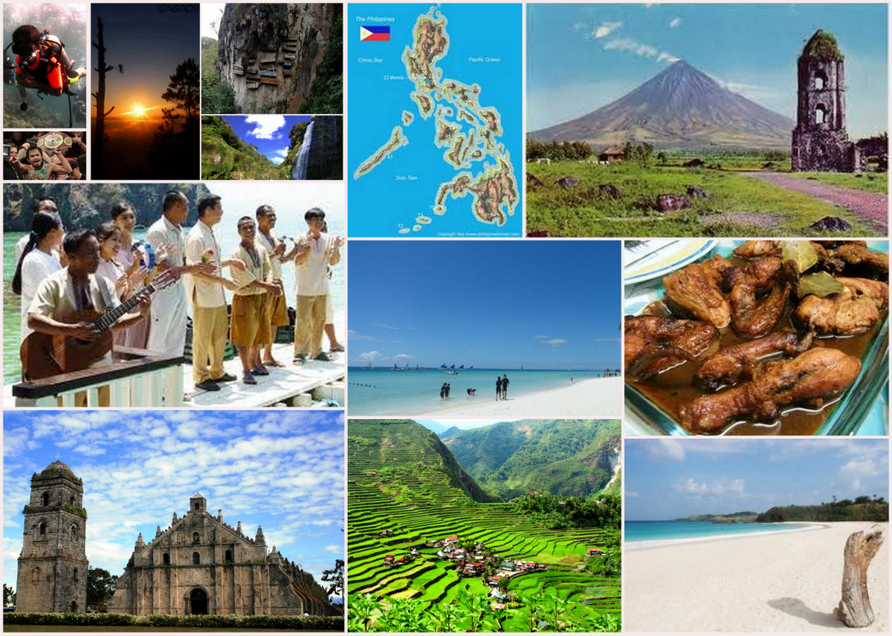

The Philippines is an archipelago found in Southeast Asia comprised of more than 7,000 islands dotting the Pacific Ocean. With its long coastline, the Philippines is gifted with stretches of pristine white sand beaches surrounded by crystal clear waters.In fact, several Philippine islands and beaches, like Boracay, Palawan, and Siargao, have been consistently named as the best in the world by major travel publications.But there’s more to the Philippines than just being an idyllic tropical destination for island-hopping getaways and beach adventures.The Philippines is also home to world-renowned natural wonders like an underground river and rice terraces, incredible diving spots rich in biodiversity, colorful public transportation, unique cuisine, vibrant festivals that showcase its colorful culture, and friendly locals regarded as some of the happiest in the world.The country's official tourism slogan is “It’s More Fun in the Philippines” because whatever type of travel adventure you’re looking for, you’re bound to discover a fun experience in the Philippines.Summer Weather in the Philippines Almost All-Year If you’re craving for the rays of the sun on your skin, the Philippines has that in spades. As a tropical country, the Philippines only has two seasons: dry and rainy seasons.The dry season covers November to May, while the rainy season is usually from June until October. It’s still sunny and warm during the rainy months, so tours in the Philippines are available year-round, with cancellations only necessary when there’s a typhoon. Friendly and Warm Filipinos Aside from the Philippines' picturesque spots, the Filipinos' warmth and hospitality is a reason itself for you to visit the country. In fact, the Philippines often rank as the friendliest country in Asia. The moment your plane lands here, you will be greeted with the genuine and loving smiles of Pinoys. Filipinos are very proud of the beauty of their country and their culture. That’s why when they meet travelers who are visiting the country, the locals will go out of their way to help you experience this. Filipinos acting like tour guides come naturally, from teaching you local words to pointing out the best places to visit or delicacies to try. Communicating with locals is not a problem. English is one of the Philippines' official languages, and most Filipinos speak and understand it.Filipinos are very hospitable too. The concept of the "extended family" is an important aspect of their culture. If you have Filipino friends who invite you to their home, they will treat you like you’re a part of their family. Don't be surprised if they regularly prepare a feast of home-cooked Filipino food for you. Natural Wonders Unique to the Philippines The Philippines is blessed with unique natural wonders. Be in awe when you do the Puerto Princesa Underground River tour, which will take you to the Puerto Princesa Subterranean River National Park. Colorful and Fun Philippine Festivals Filipinos sure know how to throw a street party, and they do it in colors and full costumes. Festivals in the Philippines are some of the most joyous, fun, and loud in Asia. Make sure to have your camera ready to snap the wildest smiles and happy faces.Festivals (or fiestas) in the Philippines are either religious, historical, or cultural. Religious festivals honor Roman Catholic figures, historical festivals celebrate significant events, while cultural festivals celebrate a bountiful harvest or promote products. Some most notable Filipino foods include adobo, chicken or pork meat cooked in soy sauce and vinegar, and lechon or roasted whole pig, which the late Anthony Bourdain swore by as the best pig he has ever tried. There's also balut (duck embryo), a Filipino street food perfect for those who like trying exotic dishes, and halo-halo, a famous summer staple with crushed ice, milk, and sweetened fruits.